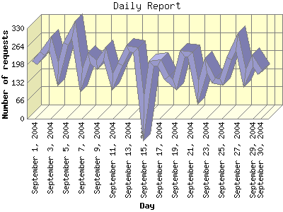

Report generated by Analog 5.91beta1 and Report Magic 2.21
|
Web Server Statistics for "Harish Narayanan (hnarayan) - September 2004" Report generated by Analog 5.91beta1 and Report Magic 2.21 |
The Daily Report identifies the activity for each day within the reporting period. Remember that one page hit can result in several server requests as the images for each page are loaded.

| Day | Number of requests | Number of bytes transferred | Percentage of the bytes | Percentage of the requests | |
|---|---|---|---|---|---|
| 1. | September 1, 2004 | 204 | 3.829 MB | 2.03% | 3.49% |
| 2. | September 2, 2004 | 237 | 4.676 MB | 2.48% | 4.05% |
| 3. | September 3, 2004 | 277 | 7.223 MB | 3.83% | 4.73% |
| 4. | September 4, 2004 | 162 | 11.268 MB | 5.97% | 2.77% |
| 5. | September 5, 2004 | 272 | 29.276 MB | 15.51% | 4.65% |
| 6. | September 6, 2004 | 324 | 12.511 MB | 6.63% | 5.54% |
| 7. | September 7, 2004 | 138 | 2.591 MB | 1.37% | 2.36% |
| 8. | September 8, 2004 | 222 | 4.474 MB | 2.37% | 3.79% |
| 9. | September 9, 2004 | 197 | 3.590 MB | 1.90% | 3.37% |
| 10. | September 10, 2004 | 238 | 4.287 MB | 2.27% | 4.07% |
| 11. | September 11, 2004 | 135 | 3.685 MB | 1.95% | 2.31% |
| 12. | September 12, 2004 | 199 | 4.675 MB | 2.48% | 3.40% |
| 13. | September 13, 2004 | 256 | 4.161 MB | 2.21% | 4.38% |
| 14. | September 14, 2004 | 250 | 5.501 MB | 2.92% | 4.27% |
| 15. | September 15, 2004 | 0 | 0.000 B | 0.00% | 0.00% |
| 16. | September 16, 2004 | 201 | 7.399 MB | 3.92% | 3.44% |
| 17. | September 17, 2004 | 203 | 13.135 MB | 6.96% | 3.47% |
| 18. | September 18, 2004 | 149 | 6.428 MB | 3.41% | 2.55% |
| 19. | September 19, 2004 | 124 | 5.266 MB | 2.79% | 2.12% |
| 20. | September 20, 2004 | 238 | 6.101 MB | 3.23% | 4.07% |
| 21. | September 21, 2004 | 235 | 11.464 MB | 6.08% | 4.02% |
| 22. | September 22, 2004 | 96 | 2.358 MB | 1.25% | 1.64% |
| 23. | September 23, 2004 | 194 | 4.828 MB | 2.56% | 3.32% |
| 24. | September 24, 2004 | 138 | 2.554 MB | 1.35% | 2.36% |
| 25. | September 25, 2004 | 135 | 3.308 MB | 1.75% | 2.31% |
| 26. | September 26, 2004 | 219 | 7.847 MB | 4.16% | 3.74% |
| 27. | September 27, 2004 | 282 | 6.475 MB | 3.43% | 4.82% |
| 28. | September 28, 2004 | 147 | 2.263 MB | 1.20% | 2.51% |
| 29. | September 29, 2004 | 211 | 3.697 MB | 1.96% | 3.61% |
| 30. | September 30, 2004 | 168 | 3.839 MB | 2.04% | 2.87% |
Most active day September 6, 2004 : 118 pages sent. 324 requests handled. 13,118,902.00 served.
Daily average: 201 requests handled. 6.507 MB served.
This report was generated on November 16, 2004 13:59.
Report time frame September 1, 2004 02:34 to September 30, 2004 22:58.
| Web statistics report produced by: | |
 Analog 5.91beta1 Analog 5.91beta1 |  Report Magic 2.21 Report Magic 2.21 |